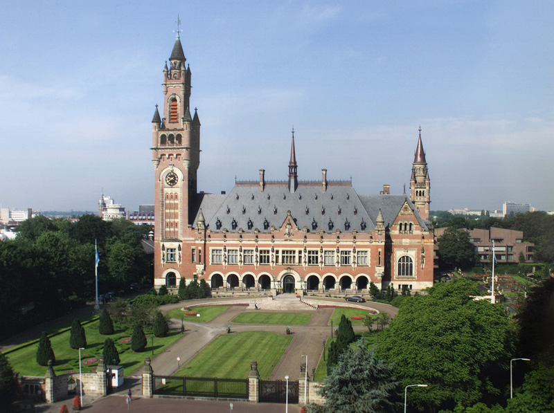

Nations
on a healthy planet LIVE NOW
The struggle for peace is an enduring one.
More than a century ago,in1899,the first International peace Conference was held in
Hague to elaborate multilateral instruments for settling crises peacefully,preventing
wars and cidifying rules of warfare.
The permanent court was established in for that which starts working in 1902.
subsequently,in 1919,the league of nations , conceived during the firsst world war,was established
under the treaty of Versailles "to promote international coperation and to achieve peace and security".
But it fails to prevent Second World War.
This lead to rise of "United Nations",the term coined by American president Franklin D Roosevelt
during the Second World War.
Headquartered in New York,the United Nations officially came into existence on 24 October,1945 with
the ratifiction of the charter by China, France ,the Soviet Union, the United Kingdom,
the United states and a majority of other signatories.
Today there are 196 countries tied with United Nations.
FLAG OF "UNITED NATIONS"

EMBLEM OF "UNITED NATIONS"
PREAMBLE TO THE CHARTER
Preamble to the charter is just like a preamble of a constitution of an country.

"PREAMBLE TO THE CHARTER" of "UNITED NATIONS"
WE THE PEOPLES OF THE UNITED NATIONS DETERMINED
to save succeeding generations from the scourge of war, which twice in our lifetime has brought untold sorrow to
mankind, and
to reaffirm faith in fundamental human rights, in the dignity and worth of the human person, in the equal rights
of men and women and of nations large and small, and
to establish conditions under which justice and respect for the obligations arising from treaties and other
sources of international law can be maintained, and
to promote social progress and better standards of life in larger freedom,
AND FOR THESE ENDS
to practice tolerance and live together in peace with one another as good neighbours, and
to unite our strength to maintain international peace and security, and
to ensure, by the acceptance of principles and the institution of methods, that armed force shall not be used,
save in the common interest, and
to employ international machinery for the promotion of the economic and social advancement of all peoples,
HAVE RESOLVED TO COMBINE OUR EFFORTS TO ACCOMPLISH THESE AIMS
Accordingly, our respective Governments, through representatives assembled in the city of San Francisco, who
have exhibited their full powers found to be in good and due form, have agreed to the present Charter of the
United Nations and do hereby establish an international organization to be known as the United Nations.
PRESENT MEMBERS OF UN
SOME QUICK FACTS
- Headquarters-New York City(International territory)
- Official languages-
i)Arabic
ii)Chinese
iii)English
iv)French
v)Russian
vi)Spanish - Type-Intergovernmental organization
- Membership-196 countries
- Secretary General-António Guterres
- Deputy Secretary General- Amina J. Mohammed
- General Assembly President-Miroslav Lajčák
- Economic and Social Council President-Frederick Musiiwa Makamure Shava
- Security Council President-Elbio Rosselli
- UN Charter signed-26 June 1945
- Charter entered into force-24 October 1945
Background -In the century prior to the UN's creation, several international treaty organizations and conferences had been formed to regulate conflicts between nations, such as the International Committee of the Red Cross and the Hague Conventions of 1899 and 1907. Following the catastrophic loss of life in the First World War, the Paris Peace Conference established the League of Nations to maintain harmony between countries. This organization resolved some territorial disputes and created international structures for areas such as postal mail, aviation, and opium control, some of which would later be absorbed into the UN. However, the League lacked representation for colonial peoples (then half the world's population) and significant participation from several major powers, including the US, USSR, Germany, and Japan; it failed to act against the Japanese invasion of Manchuria in 1931, the Second Italo-Ethiopian War in 1935, the Japanese invasion of China in 1937, and German expansions under Adolf Hitler that culminated in the Second World War.
1942 "Declaration of United Nations" by the Allies of World War II -Main article: Declaration by United Nations The earliest concrete plan for a new world organization began under the aegis of the US State Department in 1939. The text of the "Declaration by United Nations" was drafted by President Franklin Roosevelt, British Prime Minister Winston Churchill, and Roosevelt aide Harry Hopkins, while meeting at the White House, 29 December 1941. It incorporated Soviet suggestions, but left no role for France. "Four Policemen" was coined to refer to four major Allied countries, United States, United Kingdom, Soviet Union, and China, which emerged in the Declaration by United Nations. Roosevelt first coined the term United Nations to describe the Allied countries. "On New Year's Day 1942, President Roosevelt, Prime Minister Churchill, Maxim Litvinov, of the USSR, and T. V. Soong, of China, signed a short document which later came to be known as the United Nations Declaration and the next day the representatives of twenty-two other nations added their signatures. The term United Nations was first officially used when 26 governments signed this Declaration. One major change from the Atlantic Charter was the addition of a provision for religious freedom, which Stalin approved after Roosevelt insisted. By 1 March 1945, 21 additional states had signed. A JOINT DECLARATION BY THE UNITED STATES OF AMERICA, THE UNITED KINGDOM OF GREAT BRITAIN AND NORTHERN IRELAND, THE UNION OF SOVIET SOCIALIST REPUBLICS, CHINA, AUSTRALIA, BELGIUM, CANADA, COSTA RICA, CUBA, CZECHOSLOVAKIA, DOMINICAN REPUBLIC, EL SALVADOR, GREECE, GUATEMALA, HAITI, HONDURAS, INDIA, LUXEMBOURG, NETHERLANDS, NEW ZEALAND, NICARAGUA, NORWAY, PANAMA, POLAND, SOUTH AFRICA, YUGOSLAVIA The Governments signatory hereto, Having subscribed to a common program of purposes and principles embodied in the Joint Declaration of the President of the United States of America and the Prime Minister of Great Britain dated August 14, 1941, known as the Atlantic Charter, Being convinced that complete victory over their enemies is essential to defend life, liberty, independence and religious freedom, and to preserve human rights and justice in their own lands as well as in other lands, and that they are now engaged in a common struggle against savage and brutal forces seeking to subjugate the world, DECLARE: 1. Each Government pledges itself to employ its full resources, military or economic, against those members of the Tripartite Pact and its adherents with which such government is at war. 2. Each Government pledges itself to cooperate with the Governments signatory hereto and not to make a separate armistice or peace with the enemies. The foregoing declaration may be adhered to by other nations which are, or which may be, rendering material assistance and contributions in the struggle for victory over Hitlerism. — The Washington Conference 1941–1942 During the war, "the United Nations" became the official term for the Allies. To join, countries had to sign the Declaration and declare war on the Axis.
Founding
The UN in 1945. In light blue, the founding members. In dark blue, protectorates and territories of the founding members. The UN was formulated and negotiated among the delegations from the Allied Big Four (the Soviet Union, the UK, the US, and China) at the Dumbarton Oaks Conference in 1944.After months of planning, the UN Conference on International Organization opened in San Francisco, 25 April 1945, attended by 50 governments and a number of non-governmental organizations involved in drafting the UN Charter. "The heads of the delegations of the sponsoring countries took turns as chairman of the plenary meetings: Anthony Eden, of Britain, Edward Stettinius, of the United States, T. V. Soong, of China, and Vyacheslav Molotov, of the Soviet Union. At the later meetings, Lord Halifax deputized for Mr. Eden, Wellington Koo for T. V. Soong, and Mr Gromyko for Mr. Molotov." The UN officially came into existence 24 October 1945, upon ratification of the Charter by the five permanent members of the Security Council—France, the Republic of China, the Soviet Union, the UK and the US—and by a majority of the other 46 signatories. The first meetings of the General Assembly, with 51 nations represented,and the Security Council took place in London beginning 6 January 1946. The General Assembly selected New York City as the site for the headquarters of the UN, and the facility was completed in 1952. Its site—like UN headquarters buildings in Geneva, Vienna, and Nairobi—is designated as international territory. The Norwegian Foreign Minister, Trygve Lie, was elected as the first UN Secretary-General.
Cold War era -Dag Hammarskjöld was a particularly active Secretary-General from 1953 until his death in 1961. Though the UN's primary mandate was peacekeeping, the division between the US and USSR often paralysed the organization, generally allowing it to intervene only in conflicts distant from the Cold War. (A notable exception was a Security Council resolution in 1950 authorizing a US-led coalition to repel the North Korean invasion of South Korea, passed in the absence of the USSR.) In 1947, the General Assembly approved a resolution to partition Palestine, approving the creation of the state of Israel. Two years later, Ralph Bunche, a UN official, negotiated an armistice to the resulting conflict. In 1956, the first UN peacekeeping force was established to end the Suez Crisis; however, the UN was unable to intervene against the USSR's simultaneous invasion of Hungary following that country's revolution. In 1960, the UN deployed United Nations Operation in the Congo (UNOC), the largest military force of its early decades, to bring order to the breakaway State of Katanga, restoring it to the control of the Democratic Republic of the Congo by 1964. While travelling to meet with rebel leader Moise Tshombe during the conflict, Dag Hammarskjöld, often named as one of the UN's most effective Secretaries-General, died in a plane crash; months later he was posthumously awarded the Nobel Peace Prize. In 1964, Hammarskjöld's successor, U Thant, deployed the UN Peacekeeping Force in Cyprus, which would become one of the UN's longest-running peacekeeping missions. With the spread of decolonization in the 1960s, the organization's membership saw an influx of newly independent nations. In 1960 alone, 17 new states joined the UN, 16 of them from Africa. On 25 October 1971, with opposition from the United States, but with the support of many Third World nations, the mainland, communist People's Republic of China was given the Chinese seat on the Security Council in place of the Republic of China that occupied Taiwan; the vote was widely seen as a sign of waning US influence in the organization. Third World nations organized into the Group of 77 coalition under the leadership of Algeria, which briefly became a dominant power at the UN. In 1975, a bloc comprising the USSR and Third World nations passed a resolution, over strenuous US and Israeli opposition, declaring Zionism to be racism; the resolution was repealed in 1991, shortly after the end of the Cold War. With an increasing Third World presence and the failure of UN mediation in conflicts in the Middle East, Vietnam, and Kashmir, the UN increasingly shifted its attention to its ostensibly secondary goals of economic development and cultural exchange. By the 1970s, the UN budget for social and economic development was far greater than its peacekeeping budget.
Post-Cold War
-Kofi Annan, Secretary-General from 1997 to 2006
After the Cold War, the UN saw a radical expansion in its peacekeeping duties, taking on more missions in ten years than it had in the previous four decades.[37] Between 1988 and 2000, the number of adopted Security Council resolutions more than doubled, and the peacekeeping budget increased more than tenfold.The UN negotiated an end to the Salvadoran Civil War, launched a successful peacekeeping mission in Namibia, and oversaw democratic elections in post-apartheid South Africa and post-Khmer Rouge Cambodia. In 1991, the UN authorized a US-led coalition that repulsed the Iraqi invasion of Kuwait.Brian Urquhart, Under-Secretary-General from 1971 to 1985, later described the hopes raised by these successes as a "false renaissance" for the organization, given the more troubled missions that followed. Though the UN Charter had been written primarily to prevent aggression by one nation against another, in the early 1990s the UN faced a number of simultaneous, serious crises within nations such as Somalia, Haiti, Mozambique, and the former Yugoslavia. The UN mission in Somalia was widely viewed as a failure after the US withdrawal following casualties in the Battle of Mogadishu, and the UN mission to Bosnia faced "worldwide ridicule" for its indecisive and confused mission in the face of ethnic cleansing.In 1994, the UN Assistance Mission for Rwanda failed to intervene in the Rwandan genocide amid indecision in the Security Council. Beginning in the last decades of the Cold War, American and European critics of the UN condemned the organization for perceived mismanagement and corruption. In 1984, the US President, Ronald Reagan, withdrew his nation's funding from UNESCO (the United Nations Educational, Scientific and Cultural Organization, founded 1946) over allegations of mismanagement, followed by Britain and Singapore. Boutros Boutros-Ghali, Secretary-General from 1992 to 1996, initiated a reform of the Secretariat, reducing the size of the organization somewhat. His successor, Kofi Annan (1997–2006), initiated further management reforms in the face of threats from the United States to withhold its UN dues. In the late 1990s and 2000s, international interventions authorized by the UN took a wider variety of forms. The UN mission in the Sierra Leone Civil War of 1991–2002 was supplemented by British Royal Marines, and the invasion of Afghanistan in 2001 was overseen by NATO.In 2003, the United States invaded Iraq despite failing to pass a UN Security Council resolution for authorization, prompting a new round of questioning of the organization's effectiveness. Under the eighth Secretary-General , Ban Ki-moon, the UN has intervened with peacekeepers in crises including the War in Darfur in Sudan and the Kivu conflict in the Democratic Republic of Congo and sent observers and chemical weapons inspectors to the Syrian Civil War.In 2013, an internal review of UN actions in the final battles of the Sri Lankan Civil War in 2009 concluded that the organization had suffered "systemic failure". One hundred and one UN personnel died in the 2010 Haiti earthquake, the worst loss of life in the organization's history. The Millennium Summit was held in 2000 to discuss the UN's role in the 21st century. The three day meeting was the largest gathering of world leaders in history, and culminated in the adoption by all member states of the Millennium Development Goals (MDGs), a commitment to achieve international development in areas such as poverty reduction, gender equality, and public health. Progress towards these goals, which were to be met by 2015, was ultimately uneven. The 2005 World Summit reaffirmed the UN's focus on promoting development, peacekeeping, human rights, and global security.The Sustainable Development Goals were launched in 2015 to succeed the Millennium Development Goals. In addition to addressing global challenges, the UN has sought to improve its accountability and democratic legitimacy by engaging more with civil society and fostering a global constituency. In an effort to enhance transparency, in 2016 the organization held its first public debate between candidates for Secretary-General.On January 1, 2017, Portuguese diplomat António Guterres, who previously served as UN High Commissioner for Refugees, became the ninth Secretary-General. Guterres has highlighted several key goals for his administration, including an emphasis on diplomacy for preventing conflicts, more effective peacekeeping efforts, and streamlining the organization to be more responsive and versatile to global needs.Structure -Main article: United Nations System The UN system is based on five principal organs:
The General Assembly,
The Security Council,
The Economic and Social Council (ECOSOC),
the Secretariat,
and the International Court of Justice.
A sixth principal organ, the Trusteeship Council, suspended operations in 1994, upon the independence of Palau, the last remaining UN trustee territory.
Four of the five principal organs are located at the main UN Headquarters in New York City. The International Court of Justice is located in The Hague, while other major agencies are based in the UN offices at Geneva, Vienna, and Nairobi. Other UN institutions are located throughout the world.
The six official languages of the UN, used in intergovernmental meetings and documents, are Arabic, Chinese, English, French, Russian, and Spanish. On the basis of the Convention on the Privileges and Immunities of the United Nations, the UN and its agencies are immune from the laws of the countries where they operate, safeguarding the UN's impartiality with regard to the host and member countries.
Below the six organs sit, in the words of the author Linda Fasulo, "an amazing collection of entities and organizations, some of which are actually older than the UN itself and operate with almost complete independence from it".These include specialized agencies, research and training institutions, programmes and funds, and other UN entities. The UN obey the Noblemaire principle, which is binding on any organization that belongs to the UN system. This principle calls for salaries that will draw and keep citizens of countries where salaries are highest, and also calls for equal pay for work of equal value independent of the employee's nationality. Staff salaries are subject to an internal tax that is administered by the UN organizations.
Principal organs of the United Nations
UN General Assembly

— Deliberative assembly of all UN member states —
•May resolve non-compulsory recommendations to states or suggestions to the Security Council (UNSC);
•Decides on the admission of new members, following proposal by the UNSC;
•Adopts the budget;
•Elects the non-permanent members of the UNSC; all members of ECOSOC; the UN Secretary General (following his/her proposal by the UNSC); and the fifteen judges of the International Court of Justice (ICJ). Each country has one vote.
more about general assenbly>>
UN Secretariat

— Administrative organ of the UN —
•Supports the other UN bodies administratively (for example, in the organization of conferences, the writing of reports and studies and the preparation of the budget);
•Its chairperson – the UN Secretary General – is elected by the General Assembly for a five-year mandate and is the UN's foremost representative.
more about Secretariat>>
UN Security council

— for international security council —
•Responsible for the maintenance of international peaceand security;
•May adopt compulsory resolutions;
•Has fifteen members: five permanent members with veto power and ten elected members.
more about security council>>
UN economic and social council

— for global economical and social affairs —
•Responsible for co-operation between states as regards economic and social matters;
•Co-ordinates co-operation between the UN's numerous specialized agencies;
•Has 54 members, elected by the General Assembly to serve staggered three-year mandates.
more about Economic and Social Council>>
International Court of Justice

— Universal court for international law —
•Decides disputes between states that recognize its jurisdiction;
•Issues legal opinions;
•Renders judgement by relative majority. Its fifteen judges are elected by the UN General Assembly for nine-year terms.
more about International Court of Justice>>
SECRETARY GENERALS OF UN
António Guterres
| S.no | Name | Country | took office | left office |
| 1 | Trygve Lie | Norway | 2 February 1946 | 10 November 1952 |
| 2 | Dag Hammarskjöld | Sweden | 10 April 1953 | 18 September 1961 |
| 3 | U Thant | Burma | 30 November 1961 | 31 December 1971 |
| 4 | Kurt Waldheim | Austria | 1 January 1972 | 31 December 1981 |
| 5 | Javier Pérez de Cuéllar | Peru | 1 January 1982 | 31 December 1991 |
| 6 | Boutros Boutros-Ghali | Egypt | 1 January 1992 | 31 December 1996 |
| 7 | Kofi Annan | Ghana | 1 January 1997 | 31 December 2006 |
| 8 | Ban Ki-moon | South Korea | 1 January 2007 | 31 December 2016 |
| 9 | António Guterres | Portugal | 1 January 2017 | -------------- |
SPECIALISED AGENCIES
The UN Charter stipulates that each primary organ of the United Nations can establish various specialized agencies to fulfil its duties. Some best-known agencies are the International Atomic Energy Agency, the Food and Agriculture Organization, UNESCO (United Nations Educational, Scientific and Cultural Organization), the World Bank, and the World Health Organization (WHO). The UN performs most of its humanitarian work through these agencies. Examples include mass vaccination programmes (through WHO), the avoidance of famine and malnutrition (through the work of the WFP), and the protection of vulnerable and displaced people (for example, by UNHCR).
ORGANISATIONS AND SPECIALISED AGENCIES OF UNITED NATIONS
| S.no | Acronym | Agency | Headquarter | Head | Established |
| 1 | FAO | Food and Agriculture Organization | Rome, Italy | José Graziano da Silva | 1945 |
| 2 | IAEA | International Atomic Energy Agency | Vienna, Austria | Yukiya Amano | 1957 |
| 3 | ICAO | International Civil Aviation Organization | Montreal, Canada | Fang Liu | 1947 |
| 4 | IFAD | International Fund for Agricultural Development | Rome, Italy | Kanayo F. Nwanze | 1977 |
| 5 | ILO | International Labour Organization | Geneva, Switzerland | Guy Ryder | 1946 (1919) |
| 6 | IMO | International Maritime Organization | London, United Kingdom | Kitack Lim | 1948 |
| 7 | IMF | International Monetary Fund | Washington, D.C., United States | Christine Lagarde | 1945 (1944) |
| 8 | ITU | International Telecommunication Union | Geneva, Switzerland | Houlin Zhao | 1947 (1865) |
| 9 | UNESCO | United Nations Educational, Scientific and Cultural Organization | Paris, France | Irina Bokova | 1946 |
| 10 | UNIDO | United Nations Industrial Development Organization | Vienna, Austria | Li Yong | 1967 |
| 11 | UNWTO | World Tourism Organization | Madrid, Spain | Taleb Rifai | 1974 |
| 12 | UPU | Universal Postal Union | Bern, Switzerland | Bishar Abdirahman Hussein | 1947 (1874) |
| 13 | WBG | World Bank Group | Washington, D.C., United States | Jim Y. Kim | 1945 (1944) |
| 14 | WFP | World Food Programme | Rome, Italy | Ertharin Cousin | 1963 |
| 15 | WHO | World Health Organization | Geneva, Switzerland | Margaret Chan | 1948 |
| 16 | WIPO | World Intellectual Property Organization | Geneva, Switzerland | Francis Gurry | 1974 |
| 17 | WMO | World Meteorological Organization | Geneva, Switzerland | Petteri Taalas (Secretary-General)
Michel Jarraud (President) |
1950 (1873) |
GROUP OF 77
The Group of 77 at the UN is a loose coalition of developing nations, designed to promote its members' collective economic interests and create an enhanced joint negotiating capacity in the UN. Seventy-seven nations founded the organization, but by November 2013 the organization had since expanded to 133 member countries.The group was founded 15 June 1964 by the "Joint Declaration of the Seventy-Seven Countries" issued at the United Nations Conference on Trade and Development (UNCTAD). The group held its first major meeting in Algiers in 1967, where it adopted the Charter of Algiers and established the basis for permanent institutional structures.